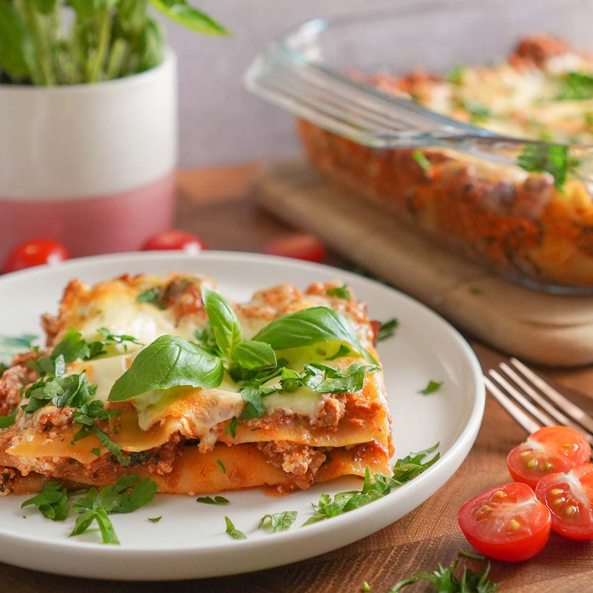

Mama's Lasagna

Description
This is a variation of my mom's lasagna. I prefer using cotttage cheese instead of ricotta.
It is a lot of work and an expensive dish--but it is sooo good!
Ingredients
- Lasagna noodles, 1 packet
- Hamburger, about 300gr
- Tomato pasta sauce, 2 cans
- Mozzarella cheese, 500gr
- Cottage cheese, 2 150gr containers
- Fresh mushrooms, about 200gr
- Fresh read pepper and onion
Steps
- Saute some fresh read pepper and white onion with olive oil
- Put saute peppers and onion in side dish
- In same saute pan brown hamburger
- Add hamburger and sauted vegteables in pot with pasta sauce, warm up
- Boil lasangna noodles until done (not too soft!)
- In 9x12" glass pan, add a layer of noodles, then sauce, cottage cheese, and last mozzarella.
Keep layers as thin as possible. Keep going until the pan is full
- Bank at 180C until top is crisp (about 20 min)